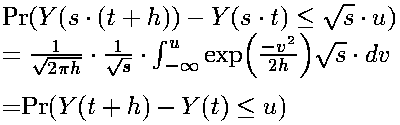

| Change varaibles to |
| and |  |
| so when | we have |
| The self-affine scaling of Brownian motion is expressed
in the statement for all | ||||
| The proof of this is straightforward, using Wiener's definition of Brownian increments: | ||||
| For with this definition, | ||||
| ||||
| Then note | ||||
| ||||
| ||||
| Thus we obtain | ||||
|  |
Return to Brownian Motion Self-Affinity